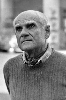

Also known as:Ultime grida dalla savana (original title)
Country:Italy, 94 minutes
Spoken languages:
Genres:Documentary
Director(s):Mario Morra, Antonio Climati
Writer(s):Mario Morra, Antonio Climati
Video Codec:Unknown
Number: 1130


Certification:R
Storyline:
A notorious mondo film depicting unbelievable and bizarre rituals, animal killing and cruelty, and people being killed and eaten, all by either animals or humans against each other or themselves.
Cast: 

Medium: Original DVD,
Comments: Part of: Grindhouse Experience
Loaned: No
Aspect ratio: Unknown